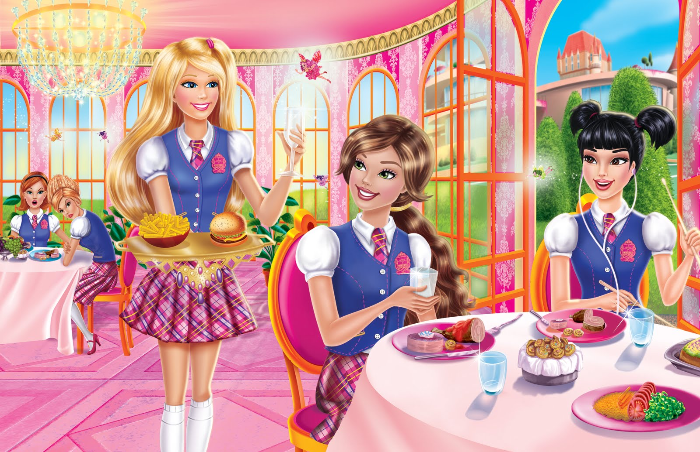

FICHA DE LA PELÍCULABarbie: Princess Charm School
✦ AÑO: 2011 ✦ DURACIÓN: 81 min ✦ PAÍS: ✦ DIRECTOR: Ezekiel Norton ✦ GUIONISTAS: Elise Allen, Kati Rocky ✦ MÚSICA: BC Smith ✦ GÉNERO: Animación. Fantástico | Cine familiar |
En esta ocasión, Barbie se pone en la piel de Blair, una chica normal y corriente que recibe una invitación para asistir a una escuela de princesas. Bleer tendrá que aprender a ser una princesa para poder graduarse. Con la ayuda de sus amigas y un poco de magia, Bleer aprenderá a que, una princesa no sólo tiene que ser hermosa, sino que tiene que tener: actitud, valor y mucha confianza! Y que la verdadera princesa se lleva en el corazón.
No empieza de la mejor manera dado que una chica llamada Delancy, su rival, intenta boicotearla constantemente, pero con el tiempo destaca en todas las disciplinas gracias a su energía y constancia.
En la escuela Blair descubre la historia de la reina Isabella, la cual murió trágicamente hace años. Cuando todas las aprendices de princesas van de excursión al Palacio Real, se encontrarán con un retrato de la reina fallecida, la cual es idéntica a Blair. ¿Cuál será la relación y el destino entre ambas?

FICHA DE LA PELÍCULABarbie: Princess Charm School
✦ AÑO: 2011 ✦ DURACIÓN: 81 min ✦ PAÍS: ✦ DIRECTOR: Ezekiel Norton ✦ GUIONISTAS: Elise Allen, Kati Rocky ✦ MÚSICA: BC Smith ✦ GÉNERO: Animación. Fantástico | Cine familiar |